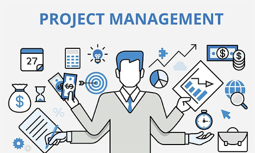

Project Management
- Communicate with project team members and stakeholders for a plan of action
- Plan out tasks that meet the project requirements
- Provide documentation for crucial application development for other team members
- Monitor ongoing project activities through Microsoft Excel
- Develop solutions to add functionality to the application
- Use the SCRUM framework to effectively manage a team to accomplish tasks

Programming
- Use Object Oriented Programming to write numerous programs and applications
- Implement numerous data structures to increase performance
- Use dynamic memory management to create applications
- Fluent in C, C++, C#, JavaScript, Java, and PHP

Database Management
- Plan,design, and access data in a relational databases
- Query and manipulate data using SQL statements
- Design forms and reports for easy data manipulation for consumers
- Used in 2nd year of my projects class to track and record beverage data

Communication
- Use interpersonal communication techniques and resolve conflicts in a clear and concise manner
- effective technical writing and proper documentation
- Communicate with other team members to resolve issues